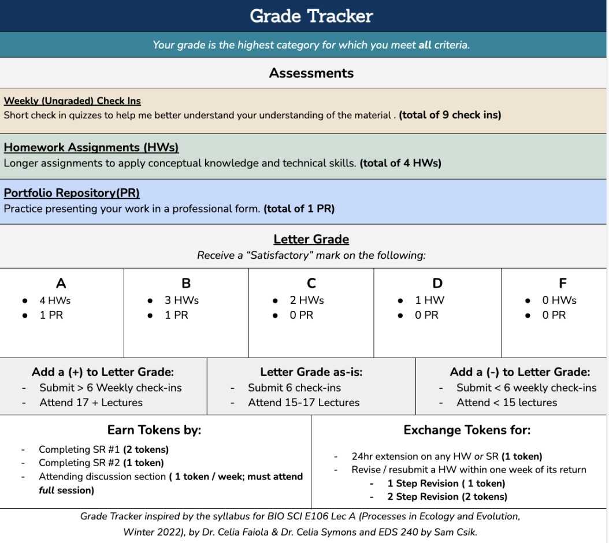
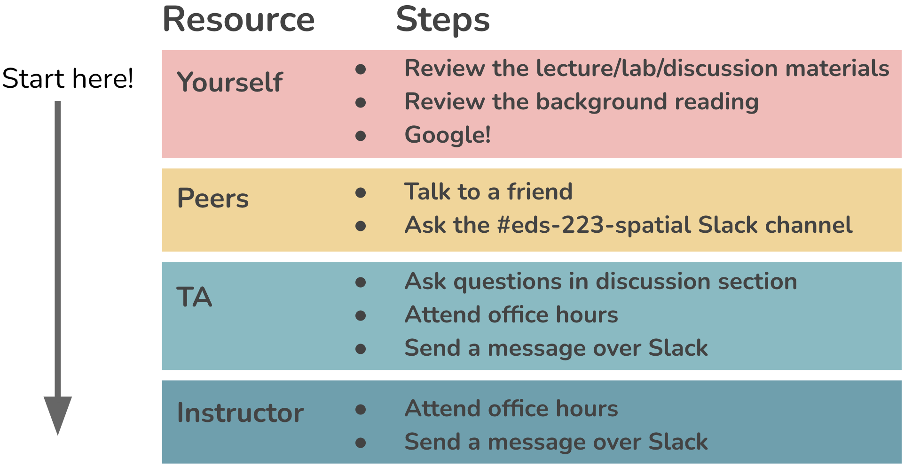

Calendar
ImportantImportant
All assignments are due at 11:59 PM on the date listed. Homework Assignments (HWs) and Self-reflections (SRs) are always due on Saturdays to ensure that you have at least one day a week with no course obligations.
Assignments
Important
Earning “Satisfactory”/ “Almost”/ “Not Yet” marks on Self-reflections (SRs), Homework Assignments (HWs), and the Portfolio Repository (PR) will determine your letter grade (e.g. A, B, etc.) for this course. See Grader Tracker below.
Links to assignments will become available as they are assigned.
| Assignment Type | Assignment Title | Date Assigned | Date Due |
|---|---|---|---|
| SR | Pre-course Self Reflection (SR#1) | 09/30/2025 | 10/04/2025 |
| HW | Homework Assignment #1 | 09/30/2025 | 10/06/2025 |
| HW | Homework Assignment #2 | 10/07/2025 | 10/18/2025 |
| HW | Homework Assignment #3 | 10/21/2025 | 11/08/2025 |
| SR | Mid Quarter Self Reflection (SR#2) | 10/28/2025 | 11/01/2025 |
| HW | Homework Assignment #4 | 11/11/2025 | 11/26/2025 |
| PR | Portfolio Repository | 11/11/2025 | 12/06/2025 |
Weekly Check-Ins
Important
Weekly Check-Ins will become available at the end of each class on Thursday and are due by end-of-day (11:59 PM). Completing these Check-Ins by the due dates / times will determine whether you earn a +/- on your course grade. See Grade Tracker below.
Links to surveys will become available as they are assigned.
| Weekly Check-Ins | Date Assigned | Date Due |
|---|---|---|
| Week 1 Check-In | Thurs 10/02/2025 | Thurs 10/02/2025 |
| Week 2 Check-In | Thurs 10/09/2025 | Thurs 10/09/2025 |
| Week 3 Check-In | Thurs 10/16/2025 | Thurs 10/64/2025 |
| Week 4 Check-In | Thurs 10/23/2025 | Thurs 10/23/2025 |
| Week 5 Check-In | Thurs 10/30/2025 | Thurs 10/30/2025 |
| Week 6 Check-In | Thurs 11/06/2025 | Thurs 11/06/2025 |
| Week 7 Check-In | Thurs 11/13/2025 | Thurs 11/13/2025 |
| Week 8 Check-In | Thurs 11/20/2025 | Thurs 11/20/2025 |
| No Check-In Week 9 | NA | NA |
| Week 10 Check-In | Thurs 12/04/2025 | Thurs 12/04/2025 |
Grade Tracker
Use the Grade Tracker, below, to determine your course grade:
Redeem tokens in exchange for assignment extensions, missing class, or to revise / resubmit an assignment that received an “Almost” or “Not Yet” mark.
Rubric
Each Homework Assignment (HWs) will include an individual rubric. However, to earn a “Satisfactory” assignments must adhere to best practices for producing professional output. Below are examples of professional and unprofessional outputs for guidance.
Examples of Professional Output:
Getting unstuck
Where to find help
Being a great data scientist isn’t about writing perfect code; it’s about learning how to teach yourself and when to ask for help. The only way to get better at this process is to practice by taking the time to troubleshoot on our own, so you should always plan to start there! The graphic below shows the order in which you should approach different resources for help:

Roadblock checklist
If you hit a roadblock, run through this checklist to make sure you’ve done your due diligence before bringing your question(s) to a peer, TA, or instructor.
How to ask questions
When you decide to ask a question to a peer, TA, or instructor be sure to:
- Provide context. For example, “I’m trying to do this…” or “I’m working on the task where we do this…”
- Share the specific challenge. “I’m specifically trying to [insert function / package] to do this thing.”
- Share what happens and what you’ve learned. “I repeatedly get an error message that says [this]. I’ve tried [this] and [this]”
- Show your code ideally with a reprex that they can run / test.
- Value and expect the Socratic method, especially in classes and workshops – our goal is to provide critical thinking that is transferable, not just to provide a quick fix for a single error.